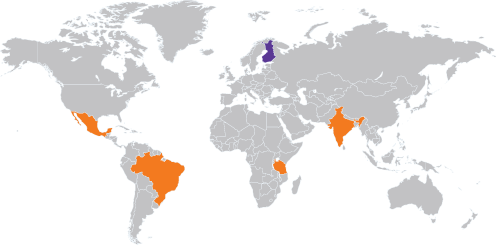

The New Global on monialainen innovaatiotutkimushanke, jonka tavoitteena on luoda resurssiniukkoja innovaatioita vähävaraisille markkinoille ja synnyttää uutta liiketoimintaa suomalaisyrityksille. Hanke tarjoaa siihen osallistuville yrityksille mahdollisuuden hankkia tietoa ja kokemusta näistä korkean potentiaalin markkinoista, kertoo hankkeen johtaja professori Minna Halme Aalto-yliopiston kauppakorkeakoulusta.
Hankkeen painopiste kohdennetaan paikallisten ihmisten jokapäiväistä elämää auttavien uudenlaisten ratkaisujen kehittämiseen mm. asumisen, energian, vesiteknologian ja jätteiden käsittelyn näkökulmista, unohtamatta tietotekniikkaa hyödyntämistä ratkaisujen mahdollistajana. Toimialasuuntaus on joustava huomioiden ohjelmaan osallistuvien yritysten osaamiset ja odotukset. Hankkeen tavoitteena on parantaa siihen osallistuvien yritysten osaamista ja liiketoimintamahdollisuuksia kehittyvien korkean potentiaalin maissa sekä synnyttää konkreettisia tuote-, palvelu- ja liiketoimintamalliaihioita.
Seuraavien kahden vuoden aikana suomalaisyrityksille hankkeessa luodaan Aalto-yliopiston Living Lab -idealla toimivia kokeilupaikkoja Intiaan, Meksikoon, Brasiliaan ja Tansaniaan. Innovointi tapahtuu yhdessä paikallisten asukkaiden, yrittäjien, opiskelijoiden ja kansalaisjärjestöjen kanssa. Kaiken kokoisille suomalaisille yrityksille tarjoutuu mahdollisuus innovoida uudenlaisia tuotteita ja liiketoimintamalleja näille uusille ja houkutteleville markkinoille. Ensimmäinen kohdemaassa tapahtuva innovointijakso on Tansaniassa kesäkuussa ja toinen Intiassa loka-marraskuussa 2014. Hankkeeseen osallistuminen on siihen mukaan valituille yrityksille ilmaista.
Ainutlaatuiseksi hankkeen tekee sen keskittyminen kehittyvien korkean potentiaalin markkinoihin ja mahdollisuus toimia yrityksen valitsemassa kohdemaassa yhdessä akatemian ja paikallisten toimijoiden kanssa. Yrityksille syntyy mahdollisuus aivan uudenlaiseen oppimiseen ja kokemusta toimimisesta täysin uudenlaisilla ja nopeasti kehittyvillä markkinoilla. Hankkeeseen osallistuminen mahdollistaa yrityksiä paitsi luomaan uudenlaisia markkinoita, niin myös kiihdyttää yritysten kykyä uudistua avoimessa innovaatioympäristössä toteaa hankkeen yritysyhteistyöstä vastaava Petri Allekotte Aalto-yliopistosta. Hankkeen suurin rahoittaja on Tekes.